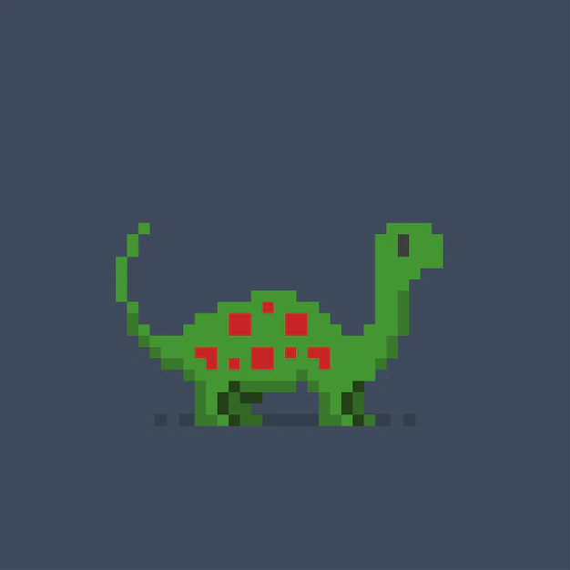

<!DOCTYPE html>
<html>
<head>
<meta charset="UTF-8">
<title>Insert title here</title>
<script src="https://cdnjs.cloudflare.com/ajax/libs/jquery/3.6.0/jquery.min.js"></script>
<style>
	ul,li{margin:0; padding:0;}
	img{width:100px; height:100px;}
	li{list-style-type:none; float:left; border:1px solid red; margin:4px; padding:4px;}	
</style>
<script>
	$(()=>{
		// before() : 선택자 이전에 객체를 추가
		$("#i").before("<li></li>");
		// insertBefore() : 선택자 이전에 객체를 추가
		// 내용		선택자
		$("<li></li>").insertBefore("#i");
		// after() : 선택자 다음에 객체를 추가
		$("#i").after("<li></li>");
		// insertAfter() : 선택자 다음에 객체를 추가
		$("<li id='copy'></li>").insertAfter("#i");
		// append() : 선택자의 내용중에 제일 마지막에
		$('ul').append("<li></li>");
		// appendTo() : 내용, 선택자 // 앞의 컨텐츠가 ul이 된다
		$("<li></li>").appendTo('ul');
		// html() 	$('ul').html("<li></li>")
		// prepend(), prependTo() : 선택한 요소 내에 제일 처음에 추가
		$("ul").prepend("<li></li>");
		$("<li></li>").prependTo('ul');
		
		// 요소 복사하기 > 사용은 한번만 할 수 있다.
		var element = $("#copy").clone();
		element.attr("id",'copy2');
		$("ul").prepend(element);
		
		// empty() : 선택자의 내용을 지우기
		$('#copy').empty();
		
		// remove() : 선택자와 내용을 지우기
		$('li:first').remove();
		
		// replaceAll(), replaceWith() : 선택자를 다른 객체로 치환
		// $("<h1>replaceAll</h1>").replaceAll("#copy");
		// $("#i").replaceWith("<h1>ReplaceWith</h1>");
		setInterval('imgMove()',1000);
		
	});
	
	function imgMove(){
		// 첫번째 li를 빼서 ul에 넣는다
		$("li:first").appendTo("ul")
	}
</script>
</head>
<body>
<ul>
	<li id="i"></li>
</ul>
</body>
</html>